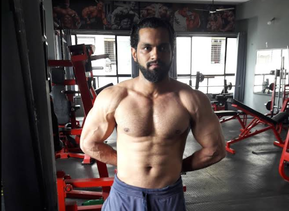

About K-Fitness
Discover our passion for fitness and commitment to your success.
Meet Khaliq Sayyed
Khaliq Sayyed, the founder of K-Fitness, is a certified fitness trainer with over 10 years of experience in transforming lives through fitness. His dedication to helping clients achieve their goals has made K-Fitness a trusted name in the industry. With a background in strength training and nutrition, Khaliq leads a team of expert trainers to deliver personalized fitness solutions.

Our Mission
At K-Fitness, our mission is to empower individuals to unlock their full potential through fitness, community, and expert guidance. We believe in creating a supportive environment where everyone can thrive, regardless of their starting point.
Achievements & Certifications
- Certified Personal Trainer (CPT) - National Academy of Sports Medicine (NASM)
- Nutrition Specialist - Precision Nutrition
- Winner, Best Local Gym 2024 - Community Fitness Awards
- Certified Strength & Conditioning Specialist - NSCA